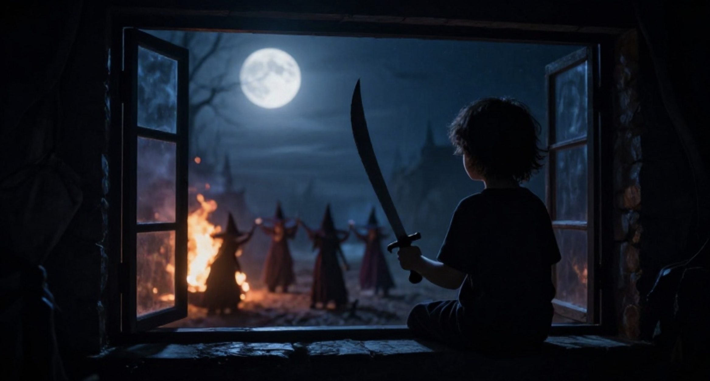

A little silver scimitar,
A-drifting down the sky.
And near beside it is a star,
A timid twinkling golden star,
That watches like an eye.
The witches have a fire again,
Just like the ones we make,—
And now I know they’re having tea,
I wish they’d give a cup to me,
With witches’ currant cake.
Source for images: DeepAI. "A silhouetted child holding a scimitar looking out a nursery window at a group of witches setting fire to the area around them. The moon is shining bright in the sky above." and "Halloween background pattern with gold stars. Night sky and dark orange for the stars."
https://poets.org/poet/sara-teasdale